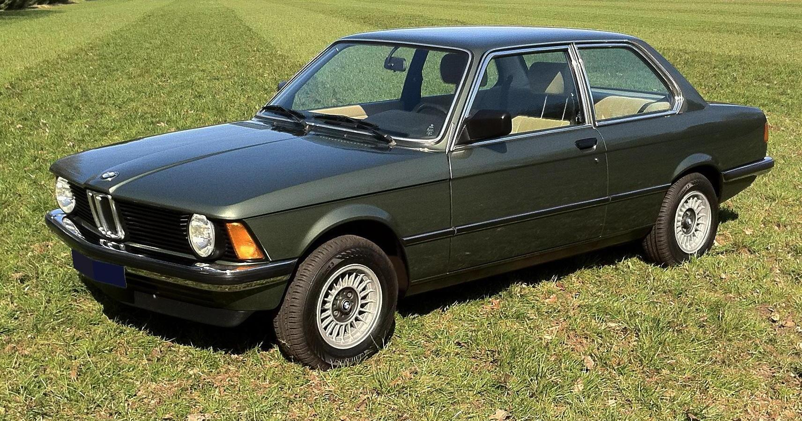
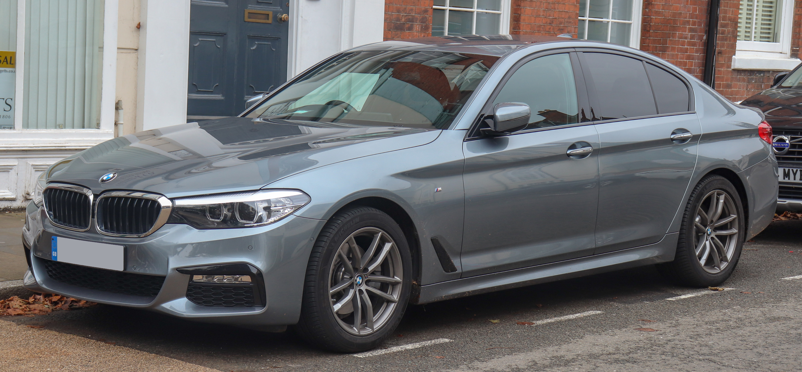
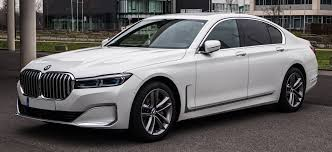
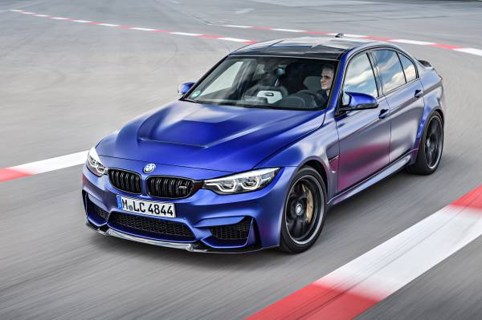
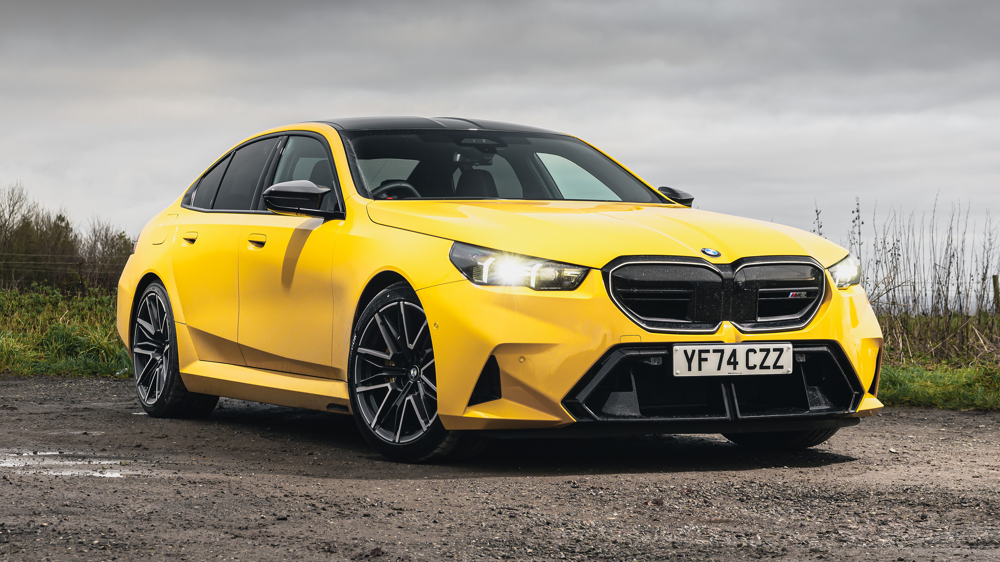
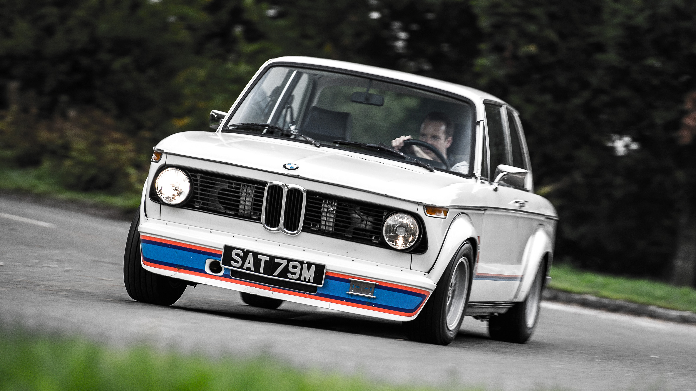
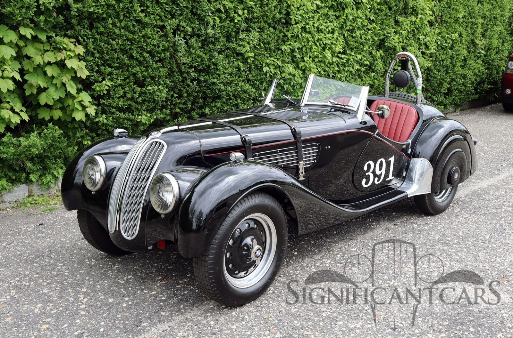
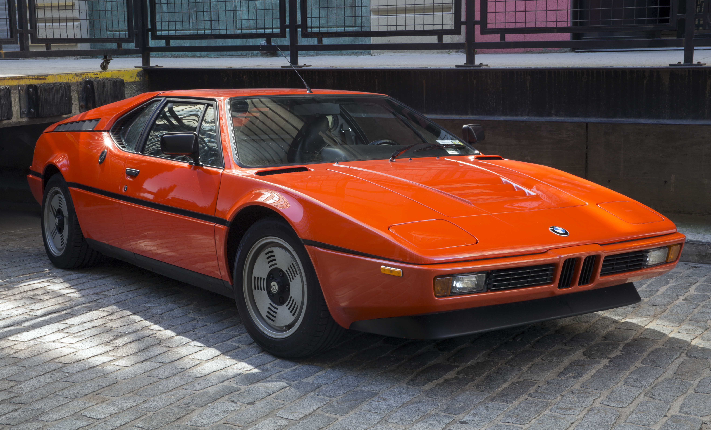
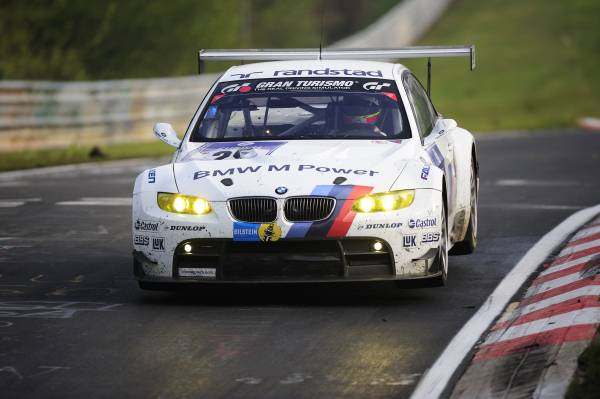

BMW
The Ultimate Driving Machine
Founded: 1916
Country: Germany
Icon: 3 Series, M3
Inline-6 Expert
The Ultimate Driving Machine
BMW's story begins in 1916 as an aircraft engine manufacturer. The famous blue-and-white logo represents a spinning propeller against the blue sky - a nod to the company's origins. After World War I, the Treaty of Versailles banned German aircraft production, forcing BMW to pivot.
The company turned to motorcycles, producing the R32 in 1923. Its boxer engine design would define BMW motorcycles for decades. In 1928, BMW acquired Automobilwerk Eisenach and began producing cars - first the Dixi, a licensed Austin 7.
The 1930s brought BMW's first true sports cars: the 328 roadster. Lightweight, aerodynamic, and powered by a brilliant 2.0L six-cylinder, the 328 dominated racing and established BMW's performance credentials. It was years ahead of its time.
After World War II, BMW nearly collapsed. The company survived by making motorcycles and the quirky Isetta microcar. The 1950s 507 roadster was beautiful but expensive, nearly bankrupting the company.
The turnaround came in 1962 with the "New Class" (Neue Klasse) 1500. This modern sedan established BMW's identity: sporting luxury, rear-wheel drive, and elegant design. It saved the company and set the template for everything that followed.
The 1970s were transformative. The 5 Series (1972) created the executive sedan segment. The 3 Series (1975) defined the sports sedan. The 6 Series (1976) and 7 Series (1977) completed the numerical lineup. BMW had become a full-line premium manufacturer.
The 1980s brought the M division to prominence. The M1 supercar, M3, and M5 created the "ultimate driving machine" reputation. BMW's inline-six engines became legendary for their smoothness and power.
Today, BMW has expanded far beyond cars - Mini, Rolls-Royce, motorcycles, and electric i models. Yet the core remains: rear-wheel drive, inline engines, and driving pleasure. The "Ultimate Driving Machine" isn't just a slogan; it's the company's DNA.
"BMW is not just a car. It's a philosophy. The driver and the machine become one."- BMW design philosophy

7 generations | 1975-present
The benchmark sports sedan. The 3 Series has defined the compact executive segment for nearly 50 years. Each generation sets new standards for handling, performance, and balance.

1972-present
The executive sedan that created the segment. The 5 Series balances luxury and driving dynamics perfectly.

1977-present
The flagship luxury sedan. Technology leader for BMW, introducing iDrive, V12 engines, and advanced chassis systems.

1986-present
The ultimate compact performance car. Born from touring car racing, the M3 has defined the high-performance sports sedan segment.

1984-present
The original "wolf in sheep's clothing." Supercar performance in a luxury sedan package.

1968-1976
The car that established BMW's sporting identity. Compact, light, and with a 2.0L engine, it was the precursor to the 3 Series.

1936-1940
A pre-war masterpiece. Lightweight, aerodynamic, and dominant in racing. The 328 established BMW's engineering reputation.

2014-2020
A futuristic plug-in hybrid sports car with stunning design and impressive efficiency.
BMW Motorsport GmbH (now BMW M GmbH) was founded in 1972 to oversee the company's racing activities. It quickly became the source of BMW's highest-performance road cars.
The first M car and only mid-engine supercar. Designed by Giugiaro, powered by a 3.5L six, only 453 built.
Homologation special for touring car racing. Each generation pushes performance further while maintaining daily usability.
The original super sedan. The first M5 was hand-built by individual craftsmen.
The modern interpretation of the E30 M3 - compact, powerful, and pure.
The grand tourer, reviving the 8 Series name with V8 and V12 power.
High-performance SUVs that defy physics, combining practicality with supercar acceleration.
M cars are characterized by more powerful engines, enhanced suspension, aggressive styling, and meticulous attention to driving dynamics. They've earned a cult following worldwide.

BMW M1 - The first M car
The legendary four-cylinder that powered the 2002 and early 3 Series. Over 3.5 million produced.
The "big six" that powered everything from 2500 to 7 Series and M5. Renowned for durability and torque.
The E30 M3's 2.3L four-valve screamer, derived from the M1's engine. 238 hp from 2.5L in evolution form.
The six-cylinder masterpiece from M1 and early M5. Four-valve, individual throttles, glorious sound.
E36 M3's engine. European version had individual throttles and 321 hp. US version detuned.
The last naturally-aspirated M3 six. 3.2L, 333 hp, 8,000 rpm redline. A masterpiece.
First M V8. 4.9L, 400 hp in E39 M5. Individual throttles, forged internals.
The V8 from E90 M3. 4.0L, 414 hp, 8,400 rpm redline. Direct from racing.
First turbo M3 engine. 3.0L twin-turbo six, 425-444 hp. Massive torque.
Current M engine. 3.0L twin-turbo six, up to 503 hp in Competition models.
7 Series flagship engine. 5.0L to 6.0L, smooth and powerful.
BMW's transition from naturally-aspirated to turbocharged engines marked a new era, with more power and efficiency.
The E30 M3's racing success is legendary - it won over 1,500 races in its career, including multiple touring car championships worldwide. The "M" badge carries real racing heritage.
